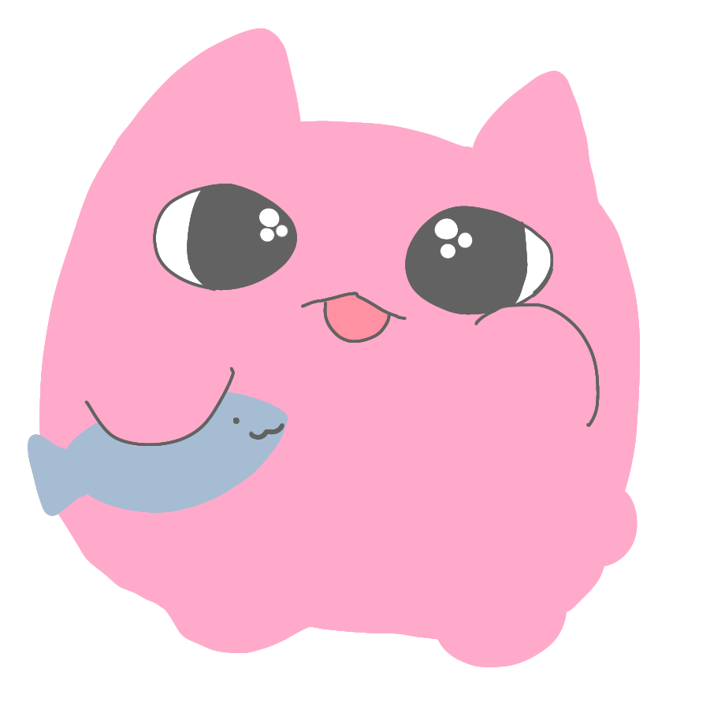

<DOCTYPE HTML5>
<html>
 <head>
  <meta charset="UTF-8">
   <title>Photoframe</title>
   <script src="https://ajax.googleapis.com/ajax/libs/jquery/3.2.1/jquery.min.js" crossorigin="anonymous"></script>
  <!--CSSファイルの読み込み-->
  <link rel="stylesheet" type="text/css" href="./index.css">
 </head>
 <body>
   <div id="mainvisual">
   </div>

   <div id="chara">
   </div>

  <!--ファイルの読み込み　拡張子をPNG, JPEGに設定-->
  <input type="file" id="selectFile" accept=".png,.jpeg">


  <section id="contents">
    <div class="flex-container">

  <!--canvasの描画-->
  <!-- 読み込んだファイルのcanvas -->
      <div class="flex-item">
  <canvas id="concat" width="600" height="400"></canvas>

    <!-- 消しゴム -->
<p id="eraser"><button type="button2" id="btn-eraser"></button></p>
  </div>

  <div class="box">
  <h1><div>
  <!-- 合成するcanvas body -->
  <span><button type="button1" id="btn-concat1"><canvas id="image1" width="300" height="200"></canvas></button></span>
  <span><button type="button1" id="btn-concat2"><canvas id="image2" width="300" height="200"></canvas></button></span>
  <span><button type="button1" id="btn-concat3"><canvas id="image3" width="300" height="200"></canvas></button></span>
  <span><button type="button1" id="btn-concat4"><canvas id="image4" width="300" height="200"></canvas></button></span>
    </div></h1>


        </div>
    </section>

  <!--.jsファイルの読み込み-->
  <script type="text/javascript" src="index.js"></script>
 </body>
</html>
